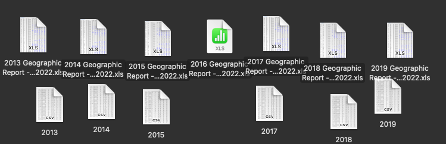

Throughout the month of June and May, I've done lots of little scattered things that haven't quite warrented their own post, but added together do constitute quite a bit of exploration. First, I contacted Mr. Navkal in May, asking for opportunities regarding the Energize Andover program. He kindly guided me towards two possible projects, one regarding poverty in Lawrence, MA, and the other regarding the MassSave program across the state. I've also looked into improving my python skills, which is not up to par with the rest of my programming skills.
I looked into both projects, but it seemed that the MassSave program was much simpler due to my lack of experience with census data and other ways to get data. As such, I downloaded the datasets that MassSave provides regarding costs and savings across the State. Specifically, I downloaded the yearly geographic data from the years 2013 - 2019. The data came in excel formats, but was pretty simple to convert to csv formats for python. I did notice that the 2016 data was unable to be read on my computer, so I'm not sure whether or not the data is corrupted or MacOS couldn't open that file for some reason.
Regardless, I wrote a short python script to get the data into a pandas dataframe, which after some fiddling with the headers worked out pretty well. It was then I realized I had very limited ability with actually analyzing the data beyond superficial manipulation, so I've found an online course to chip away at to hone those skills.
Additionally, I've spent a good amount of time relearning how to launch a static webpage - I know it would probably be better to use a dynamic webpage at this day in age, but since Github Pages only supports static websites, this will have to do. Finding the theme wasn't too hard, and getting rid of the clutter and understanding how to add my own content was a lot easier than I remembered. I think the years of programming I now have behind me are finally showing 7th grade me how to do things :).
That's essentially all I did during June relating to software & tech. It's been a long month for me mentally as there's been a lot of changes and things to learn and understand. Hopefully as the summer (and years) go on I will be able to find a pace and work some things out.